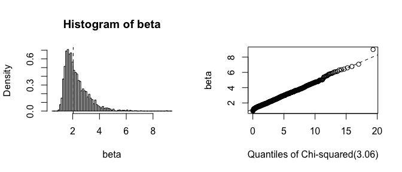
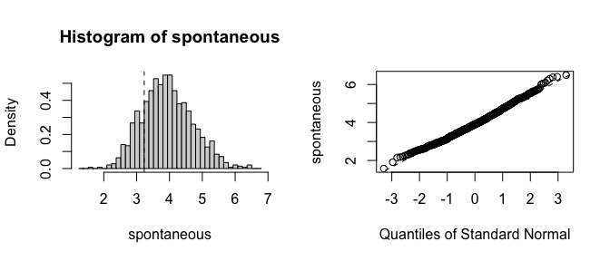

fwb implements the fractional weighted bootstrap (FWB), also known as the Bayesian bootstrap, following the treatment by Xu et al. (2020). The FWB involves generating sets of weights from a uniform Dirichlet distribution to be used in estimating statistics of interest, which yields a posterior distribution that can be interpreted in the same way the traditional (resampling-based) bootstrap distribution can be. The primary function is fwb(), which is essentially a drop-in for boot::boot() in that it takes in a dataset and a function and applies that function to the dataset and a randomly generated set of case weights. Also included are fwb.ci(), a drop-in for boot::boot.ci() for computing various kinds of confidence intervals (e.g., percentile, normal, bias-corrected percentile, etc.), and vcovFWB(), a drop-in for sandwich::vcovBS() for computing a coefficient covariance matrix from a regression model using the FWB.
Check out the fwb website!
Installation
You can install the current stable version of fwb from CRAN with:
install.packages("fwb")You can install the development version of fwb from GitHub with:
# install.packages("remotes")
remotes::install_github("ngreifer/fwb")Examples
Below are some examples of how to use fwb. We set a seed to ensure all results are replicable. (Note that when parallel processing is used, a special kind of seed needs to be set; see ?set.seed for details.)
Bearing cage field failure Weibull analysis from Xu et al. (2020)
This example involves performing a Weibull analysis to estimate the (shape) parameter of the Weibull distribution characterizing the time to failure of a set of aircraft engines. Among the 1703 engines, there were only 6 failures and 1697 right-censored observations. The traditional (resampling-based) bootstrap would fail if a bootstrap replication omitted the 6 failures, but all failures are retained when using the FWB, which makes it particularly effective for this analysis.
data("bearingcage", package = "fwb")
# Function to compute the scale (eta) and shape (beta) parameters
# from weighted data
weibull_est <- function(data, w) {
fit <- survival::survreg(survival::Surv(hours, failure) ~ 1,
data = data, weights = w,
dist = "weibull")
c(eta = unname(exp(coef(fit))), beta = 1 / fit$scale)
}
# 1999 bootstrap replications; more is always better
fwb_est <- fwb(bearingcage, statistic = weibull_est,
R = 1999, verbose = FALSE)
fwb_est
#> FRACTIONAL WEIGHTED BOOTSTRAP
#>
#> Call:
#> fwb(data = bearingcage, statistic = weibull_est, R = 1999, verbose = FALSE)
#>
#> Bootstrap Statistics :
#> original bias std. error
#> eta 11792.178173 7722.5390790 2.652048e+04
#> beta 2.035319 0.2326988 8.790395e-01
# Bias-corrected accelerated percentile
# confidence interval
summary(fwb_est, ci.type = "bca")
#> Estimate Std. Error CI 2.5 % CI 97.5 %
#> eta 1.18e+04 2.65e+04 3.15e+03 7.17e+04
#> beta 2.04e+00 8.79e-01 1.24e+00 4.55e+00
# Plot the bootstrap distribution
plot(fwb_est, index = "beta", qdist = "chisq")
Infertility logistic regression analysis using infert dataset
This example demonstrates using vcovFWB() to estimate standard errors for the effect of spontaneous and induced abortions on infertility as analyzed in Trichopoulos et al. (1976). Patients are organized into matched sets of 3 patients each. We use a fixed effects logistic regression to adjust for matched set membership (ignoring the potential bias in this approach for the sake of the example). The traditional bootstrap fails because many matched sets will fully omit either cases or non-cases, leading to perfect prediction and the failure of the model to converge, yielding invalid estimates. Because all units are retained when using the FWB, the model always converges and the estimates are reasonable.
data("infert")
fit <- glm(case ~ spontaneous + induced + factor(stratum),
data = infert, family = quasibinomial())
library("lmtest")
# The traditional bootstrap fails
coeftest(fit, vcov = sandwich::vcovBS)[1:3, ]
#> Estimate Std. Error z value Pr(>|z|)
#> (Intercept) -6.904101 2.285991e+22 -3.020179e-22 1
#> spontaneous 3.230286 1.670378e+14 1.933866e-14 1
#> induced 2.190303 1.194912e+14 1.833025e-14 1
# The fractional weighted bootstrap succeeds
coeftest(fit, vcov = vcovFWB)[1:3, ]
#> Estimate Std. Error z value Pr(>|z|)
#> (Intercept) -6.904101 1.8325484 -3.767486 1.648995e-04
#> spontaneous 3.230286 0.7493112 4.311007 1.625127e-05
#> induced 2.190303 0.6880744 3.183235 1.456391e-03We can also perform cluster-robust inference by bootstrapping the strata. (Note in this case the traditional bootstrap does fine, but the FWB is still more accurate.)
# Including stratum membership as a clustering variable
coeftest(fit, vcov = vcovFWB, cluster = ~stratum)[1:3, ]
#> Estimate Std. Error z value Pr(>|z|)
#> (Intercept) -6.904101 1.6343290 -4.224426 2.395510e-05
#> spontaneous 3.230286 0.7317966 4.414185 1.013912e-05
#> induced 2.190303 0.6745283 3.247162 1.165621e-03Let’s look more in-depth at the results of the traditional and fractional weighted bootstrap by comparing the output of fwb() and boot::boot(). (Note the traditional bootstrap can also be requested using fwb(., wtype = "multinom"), which will give identical results to boot::boot() when the same seed is set.)
fit_fun <- function(data, w) {
fit <- glm(case ~ spontaneous + induced + factor(stratum),
data = data, weights = w, family = quasibinomial())
coef(fit)[1:3]
}
boot_est <- boot::boot(infert, fit_fun, R = 999, stype = "f")
boot_est
#>
#> ORDINARY NONPARAMETRIC BOOTSTRAP
#>
#>
#> Call:
#> boot::boot(data = infert, statistic = fit_fun, R = 999, stype = "f")
#>
#>
#> Bootstrap Statistics :
#> original bias std. error
#> t1* -6.904101 2.629510e+21 8.083197e+22
#> t2* 3.230286 2.114656e+13 2.336509e+14
#> t3* 2.190303 1.696351e+13 1.878001e+14
fwb_est <- fwb(infert, fit_fun, R = 999, verbose = FALSE)
fwb_est
#> FRACTIONAL WEIGHTED BOOTSTRAP
#>
#> Call:
#> fwb(data = infert, statistic = fit_fun, R = 999, verbose = FALSE)
#>
#> Bootstrap Statistics :
#> original bias std. error
#> (Intercept) -6.904101 -1.7026157 1.8743631
#> spontaneous 3.230286 0.7069076 0.7657147
#> induced 2.190303 0.5690742 0.7096401Already the bias and standard errors indicate problems with the traditional bootstrap. Let’s plot histograms of the estimates to see where the failure is:
plot(boot_est, index = 2)
plot(fwb_est, index = 2)
It is clear that the estimates from the traditional bootstrap are pathological, whereas the estimates from the FWB are more reasonable. The non-normality of the FWB distributions also suggests that the usual Wald-style confidence intervals may not be accurate, and a bias-corrected percentile interval should probably be computed instead.
When to use the fractional weighted bootstrap
The FWB is uniformly more reliable than the traditional bootstrap when a weighted statistic can be computed (though this doesn’t mean the bootstrap is always valid). In most simple cases, both methods will yield the same results. In some pathological examples like those above, the FWB dramatically outperforms the traditional bootstrap. This will be true when running regression models with sparse categorical variables either in the outcome or among the predictors, for example, when estimating fixed effects or when a binary outcome is rare. However, it is important to know when a weighted statistic can be computed; for example, computing the weighted median is not always straightforward, making the traditional bootstrap potentially more useful for computing it. Still, though, the FWB deserves a place in an analyst’s toolbox.
Related packages
-
boot, which provides the traditional bootstrap, including an interface that accepts frequency weights to compute weighted statistics, as was used above -
bayesboot, which also provides functionality for the Bayesian bootstrap but does so in a more explicitly Bayesian fashion and with returned objects that are less consistent with those fromboot
Author
- Noah Greifer (noah.greifer@gmail.com)
References
Trichopoulos, D., Handanos, N., Danezis, J., Kalandidi, A. and Kalapothaki, V. (1976), Induced Abortion and Secondary Infertility. BJOG: An International Journal of Obstetrics & Gynaecology, 83, 645-650. https://doi.org/10.1111/j.1471-0528.1976.tb00904.x
Xu, L., Gotwalt, C., Hong, Y., King, C. B., & Meeker, W. Q. (2020). Applications of the Fractional-Random-Weight Bootstrap. The American Statistician, 74(4), 345–358. https://doi.org/10.1080/00031305.2020.1731599